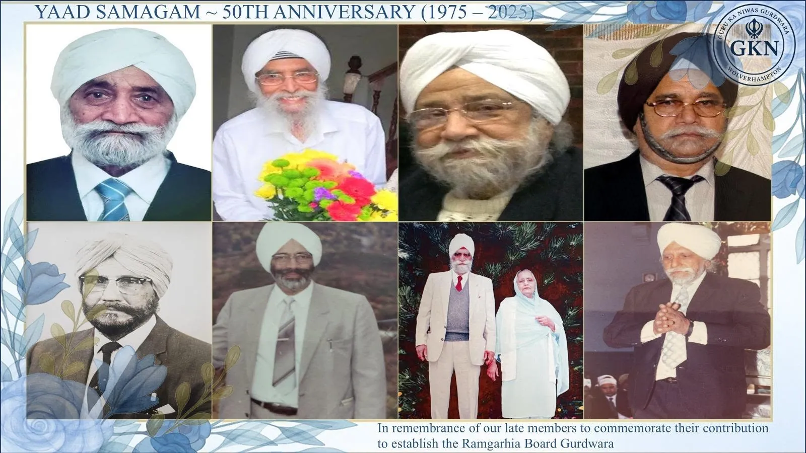

July 2025 · Remembrance
Honouring our founders
On Sunday 20 July 2025 the Gurdwara held a heartfelt remembrance event, paying tribute to the many visionary founders whose dedication laid the foundation of the Gurdwara fifty years ago.
At this Yaad Samagam, collages of the late members who helped establish the Ramgarhia Board Gurdwara were shared with the sangat, a reminder that every Gurdwara is built on the seva of ordinary people. Their commitment continues to inspire us all.
